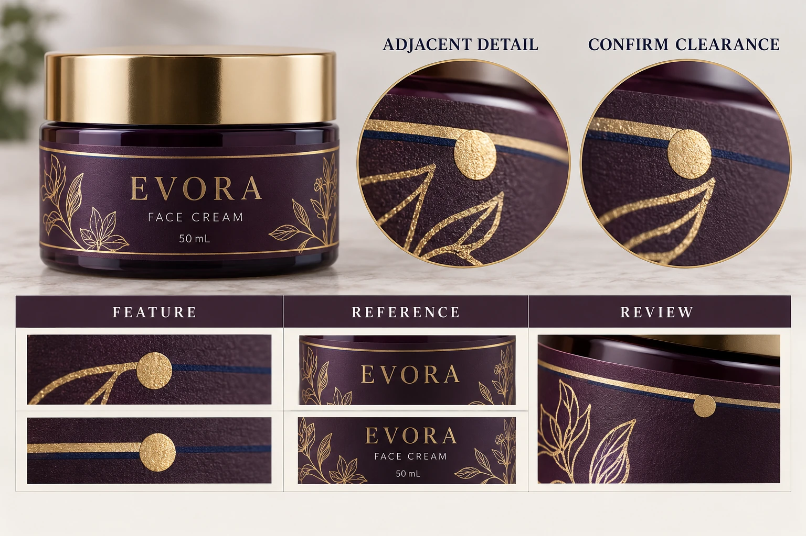

Identify what the foil must align with
Mark the foil object and the neighboring printed object in the current artwork. Explain whether the design intends a gap, an overlap, a border or a precise visual relationship. A statement to align foil with print leaves those intentions ambiguous.
Different relationships can need different review. A standalone foil leaf with space around it is not the same design problem as a foil border closely surrounding fine printed text. Ask which feature is most likely to determine acceptance and keep that feature visible in the sample request.
The foil-versus-metallic-ink guide helps select an identified effect. This article assumes the project is evaluating a foil route and asks how its placement relates to another production element.
Name the actual finishing route
KURZ's label overview describes more than one transfer-finishing route. That supports asking which process a sample represents; it does not establish a shared registration capability across all routes.
Obtain the converter's proposed foil process, material and finishing sequence. Identify whether the supplied reference uses the same relevant construction and combination. An attractive foil sample from another substrate may demonstrate a visual direction without approving your adjacent-detail relationship.
Ask prepress and finishing who prepares the corresponding artwork or tooling reference. Keep any adjustment ownership explicit. If a border or motif is enlarged, moved or simplified, the brand should review the change as artwork rather than discovering it in the finished order.
Compare a relevant combined reference
A foil-only swatch cannot show how foil aligns with printed lettering. Ask what representative proof or sample can address the combined feature and what its limitations are. A digital overlay can explain the intention, but its neat edges are not evidence of a production tolerance.
Review at actual size as well as an appropriate enlarged view. Enlargement helps locate which boundary is in question; actual size helps assess whether the combined design remains acceptable on the pack. Use a stated viewing reference rather than two different phone images under different lighting.
If a sample differs from the quoted design, identify the difference. It may be a useful process reference, but procurement should not silently treat a different motif or wider spacing as approval of the intended narrow relationship.
Use an adjacent-detail review sheet
This table is a purchasing and artwork aid. The production party must provide any numerical limits appropriate to the actual job.
| Field | Input | Release question |
|---|---|---|
| Artwork | Exact export and foil object reference | Is the same design being reviewed? |
| Relationship | Marked gap, border, overlap or other intention | What does correct placement mean? |
| Process | Actual transfer route and construction | Which production conditions apply? |
| Critical detail | Neighboring type, rule or other feature | What would make the result unacceptable? |
| Proposal | Finisher recommendation and any design correction | Is the change supported and brand-approved? |
| Evidence | Relevant combined sample and known differences | What does the reference establish? |
| Acceptance | Approved scope, reviewer and unresolved condition | Can this relationship be released? |
Start with the exact objects and intended relationship. Get the finisher's assessment, agree any artwork correction and identify the sample needed. Review the corrected export and representative physical evidence before recording acceptance.
If the design's required relationship cannot be supported, consider a revised spacing or a more independent foil element. A different decoration may also meet the visual objective. Those are legitimate alternatives, not an admission that every foil label is unsuitable.

Let the visual objective decide the effort
A hypothetical luxury wordmark whose identity depends on a close combined border can justify a focused combined-sample review. The decision deserves more than a catalogue swatch because the relationship itself is the design.
A secondary decorative accent with no critical neighbor may not need the same elaborate iteration. The team can use the supplier's supported process and proportionate evidence without creating unnecessary constraints. Spend approval effort on the feature that could actually block the brand's decision.
Keep later changes connected to that reference. A new finish, substrate or production route may require the combined relationship to be reviewed again. A repeated design does not automatically transfer every previous process assumption.
For cosmetic label quotations, provide the container, dimensions, quantity per design and marked foil/print relationship. Include the reference sample and which details are critical. Use the contact form to draft a message, then send files through email or WhatsApp. Ask which supported construction and evidence can deliver the intended relationship.